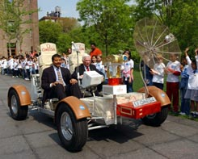

About Us
Find out more about our department.
The Office of the Director of the Hayden Plametarium operates out of the Department of Astrophysics at the American Museum of Natural History. Our mission is to bring the frontier of astrophysics to the public via exhibitry, books, public programs, and on-line resources.

Neil deGrasse Tyson and Apollo 17 Commander Gene Cernan drive a replica of the Lunar Rover on the Ross Terrace of the Rose Center for Earth and Space.The Department of Education at the American Museum of Natural History continues this mission with programs for school children, families, and teachers.